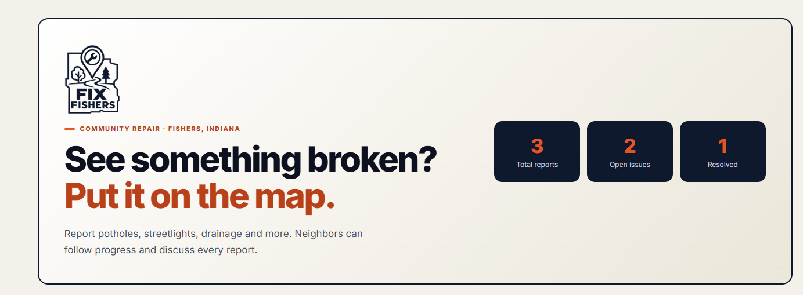
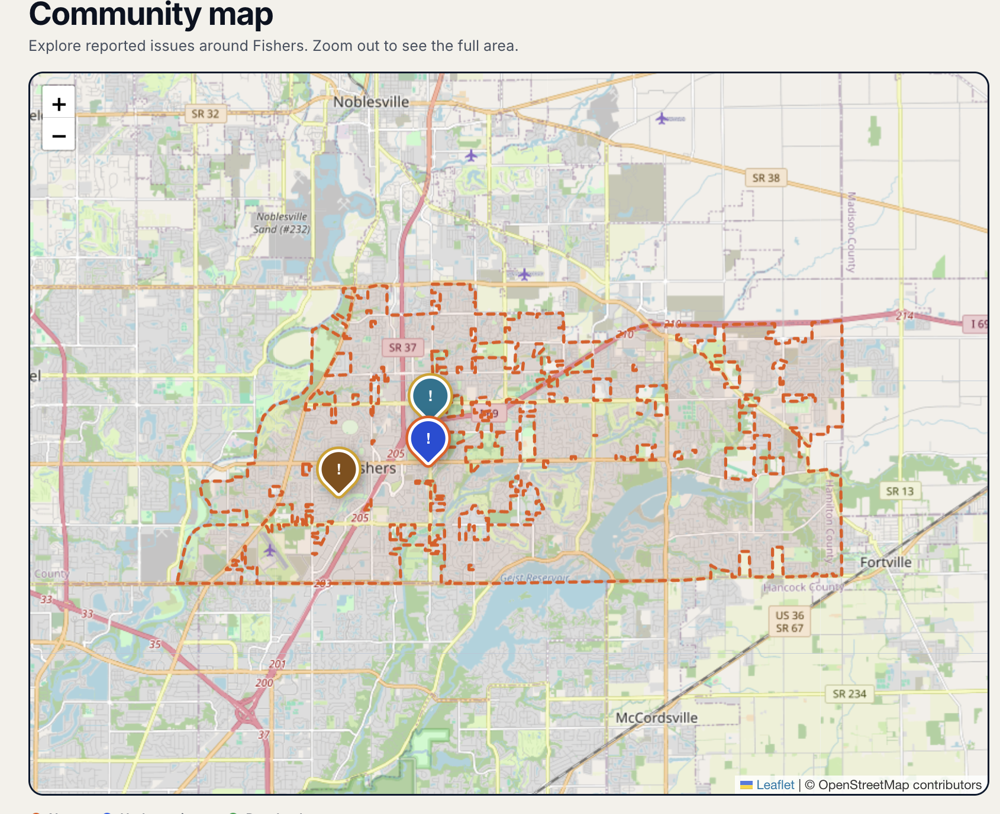
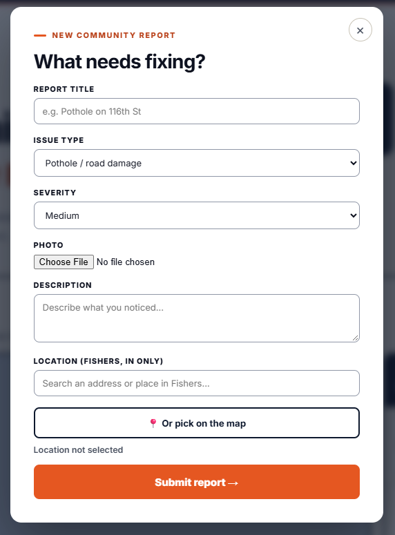

CSforGood Project
Website Link
Brief Description
FixFishers is a website that helps people report and view community problems like potholes, fallen trees, and broken streetlights. By using an interactive map, residents can easily identify problems and bring more awareness to issues that need attention in their community.
Programming Languages Used
We worked with HTML, JavaScript, and CSS
Screenshots of the Project

This is our starting page, which includes a brief description of the website and a list of issues in the area submitted by users.

This is our map page, which allows users to view issues in their area and submit new issues. The map is interactive and allows users to zoom in and out and click on markers to view more information about the issue.

This is our report page, which allows users to submit new issues and add details about the issue, including a description, location, and photo. The form is easy to use and allows users to quickly report issues in their community.
Timeline
- Sept 16ᵗʰ – Wireframing/planning
- Sept 18ᵗʰ – Set up account sign up and pages
- Sept 22ⁿᵈ – Add a map screen focused on Fishers
- Sept 24ᵗʰ – Build the form screen to write down issue data
- Sept 28ᵗʰ – Add camera features to snap and attach photos
- Sept 30ᵗʰ – Set up GPS to auto-drop pins on the map location
- Oct 2ⁿᵈ – Create the database to save issue details and photos
- Oct 6ᵗʰ – Connect the submit buttons so reports save the database
- Oct 9ᵗʰ – Make reported issue pins visible to everyone on the map
- Oct 13ᵗʰ – Create a screen to tap a pin and see photo details
- Oct 15ᵗʰ – Test the app in Fishers and fix any glitches
- Oct 26ᵗʰ – Clean up app colors, icons, and text styles
- Oct 28ᵗʰ – Finish up everything
- Oct 30ᵗʰ – Practice the project presentation and record demo videos
- Nov 3ʳᵈ – Upload final code to GitHub and submit project